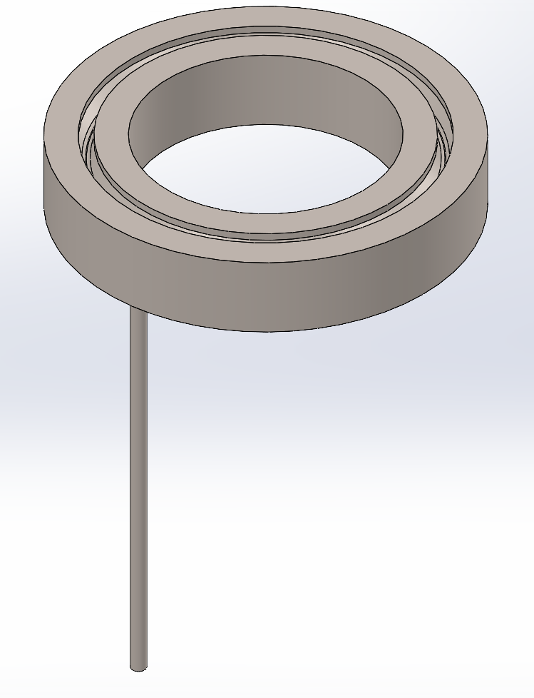

Projects & Research
Io-1
Io-1 was the first thruster developed by the Southampton University Electric Propulsion team and the foundational technology from which all of our thrusters have been developed. This 250W thruster was the first to be developed by undergraduate students as part of a society project, and it has taught us valuable skills providing us with knowledge we are using to develop our next thrusters. It was operating on Krypton gas at the David Fearne Electric Propulsion Laboratory, at the University of Southampton.

The thruster was unable to operate steadily, and so we were unable to acquire hard data points. Despite this, we can still infer certain aspects of its performance. Based on prior magnetic field tests, the magnetic field is lopsided, resulting in a non ideal field topology, since for optimum performance, the field should be mostly radial. This directly resulted in the plume being quite divergent, as shown in Figure 1, likely causing many ions to have significant non-axial components in their velocities and not contributing to the overall thrust of the engine. It can also be seen that the plasma appears very dense close to the exit plane of the thruster, indicating that most of the ionisation and acceleration is occurring closer to the exit plane, which could explain instabilities and poor performance.

Figure 2, shows Io-1 after its test firing. Damage and wear is present, but expected with the problems it faced.
Io-2
Io-2 is the natural successor of Io-1 and builds directly from its legacy. Io-2 is a 1kW Argon HET, with an attempt at magnetic sheilding. A database of prior Hall-effect thrusters, their performance and geometric parameters was formed. From this database, scaling laws were applied in order to define the mean channel diameter and channel width. Utilising these scaling laws, and the design parameters initially decided upon, shown in Table 1, the mean channel diameter was selected to be 72.6mm and the channel width to be 17.6mm. The channel length was sized to be 35mm, longer than typical thrusters, to give the Argon gas more time to form ions, as it has low ionisation energy.
| Parameter | Value |
|---|---|
| Nominal Discharge Power | 1000W |
| Nominal Discharge Voltage | 300V |
| Propellant | Argon |
| Project Budget | £1600 |
A goal for Io-2 was for it to be magnetically sheilded, therefore the topology of the magnetic field is important. Unmagnetically shielded Hall-effect thrusters will have a magnetic field topology, such that it will go from zero at the anode, then a rapid increase in field strength occurs at the channel exit or just before. A magnetically shielded Hall-effect thruster, reduced the erosion rates on the channel, extending the lifetime of the thruster. This is done by reducing the ion energy before it impacts the channel walls. Furthermore, magnetically shielded thrusters reduce the drop in potential energy near the channel exit, displaying that it can also increase the propellant throughput capabilities.
FEMM was used to simulate the magnetic field for different configurations of the magnetic circuit. Then COMSOL Multiphysics 3D magnetic simulations was used, with H-B curves for each material to simulate the final topology, which is shown in Figure 1. Unfortunately, the resulting magnetic field topology shows that Io-2 was not magnetically sheilded. The reason it wasn't shielded was due to the peak field being located outside the dishcarge channel. To make Io-2 magnetically shielded, the magnetic screen walls could be raised higher, which would force the field to curve round the discharge channel. Additionally, to bring the peak field inside the channel and improve magnetic sheilding, more advanced materials with higher saturating H-B curves would be needed, or a more creative design.

An anode is required in order to produce the axial electric field. A gas distributor is required to uniformily distribute the gas throughout the discharge channel. A single component could be made to act as both. Since the flow rate of the gas is very low, the number density of the particles will also be low, resulting in fewer collisions over the discharge channel length. The Knudsen number can be used to describe the collisonality of the gas, describing the mean free path of the neutral atom to it's characteristic length. This characteristic length can be the discharge channel length, the length of the feed pipe, or the internal channels of the gas distributor. Different simulation models are required depending on the Knudsen number, but COMSOL provides an outline on the appropriate models based on number. In this case, the Knusden number should be very small, and is compact, so in order to maintain model accuraccy and abiding by COMSOL recommendations, it was decided a k-ω model was selected. Gas moving into the discharge channel would require transional flow models, but as long as the flow was uniform at the exit of anode, no more downstream models would be required.


After various designs and iterations, a final design was made, as shown in Figure 2 and Figure 3. An 1/8 inch compression fitting was fitted onto the inlet tube to then allow for 1/4 gas supply from the vacuum chamber. Gas will first be distributed in the lower tubular ring, before moving into the second, where further baffles will distribute the gas out before being emitted into the discharge channel. Final simulations of the final design (Figure 4 and Figure 5) shows the flow is uniformly discharged through the anode injector part.


There are several power-loss mechanisms in a Hall-effect thruster; though the most notable one is thermal heating. Simple equations were used to model the thermal loads on the Hall-effect thrusters' channel walls. Discharge power to the anode is another mechanism in which heat is transferred to the thruster, but can be found with another simple equation. The total wall power loss can be found from predicting the power loss at the outer, central, inner and edge wall. An equation relating the walls areas in these spots, with power loss led to the overal heating powers to be found, shown in Table 2.
| Region | Area (mm^2) | Power (W) |
|---|---|---|
| Total Wall | 15791.16 | 211.58 |
| Outer Wall | 9912.08 | 96.78 |
| Inner Wall | 5445.52 | 106.34 |
| Center Edge | 308.21 | 2.45 |
| Outer Edge | 125.35 | 6.02 |
COMSOL 6.3 was then used to thermally simulate the thruster using a solid conduction model, with surface-to-surface radiation transfer. The final resulting thermal distribution of Io-2 is shown in Figure 6. It should be noted that the model does not account for the thruster stand or thrust balance. Therefore, it was assumed that temperatures will be lower than the simulated ones. Though all temperatures simulated are within their operating temperature limits, illustrating that the thruster should safely operate at the designed 1kW, 300V.

Io-2's design process, simulations, equations used, etc, were all documented in a report, published by SUEP. This report is available for free to download below, in order to help others learn from our mistakes and improve their own and our designs. We hope this report and others produced by SUEP, inspires and advances the electric propulsion field!
Zeus
Zeus is SUEP's most recent project, with the aim of being one of the first undergraduate student societies to create a solid fuel Hall-effect thruster. More updates are to happen soon!